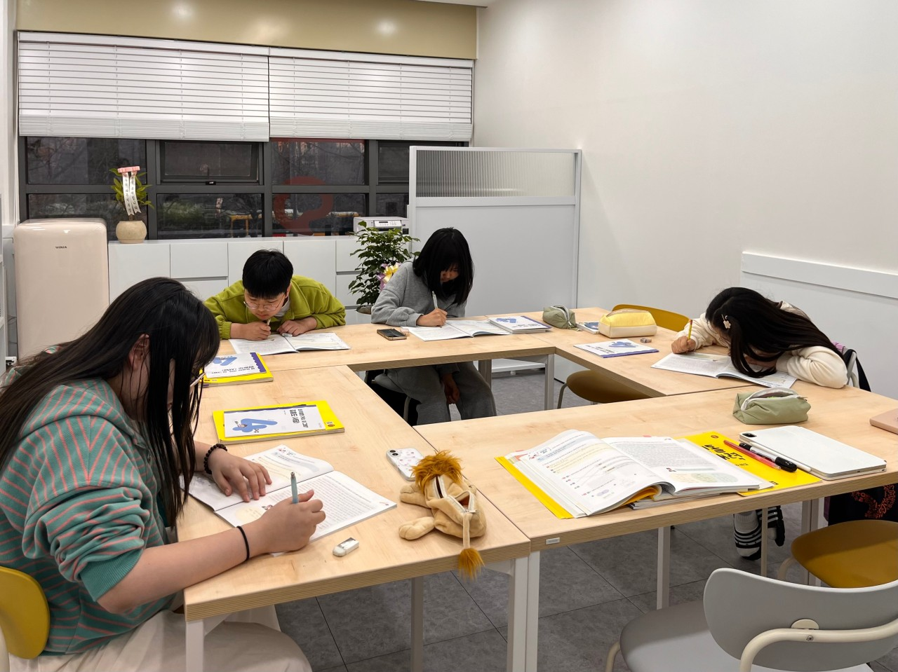
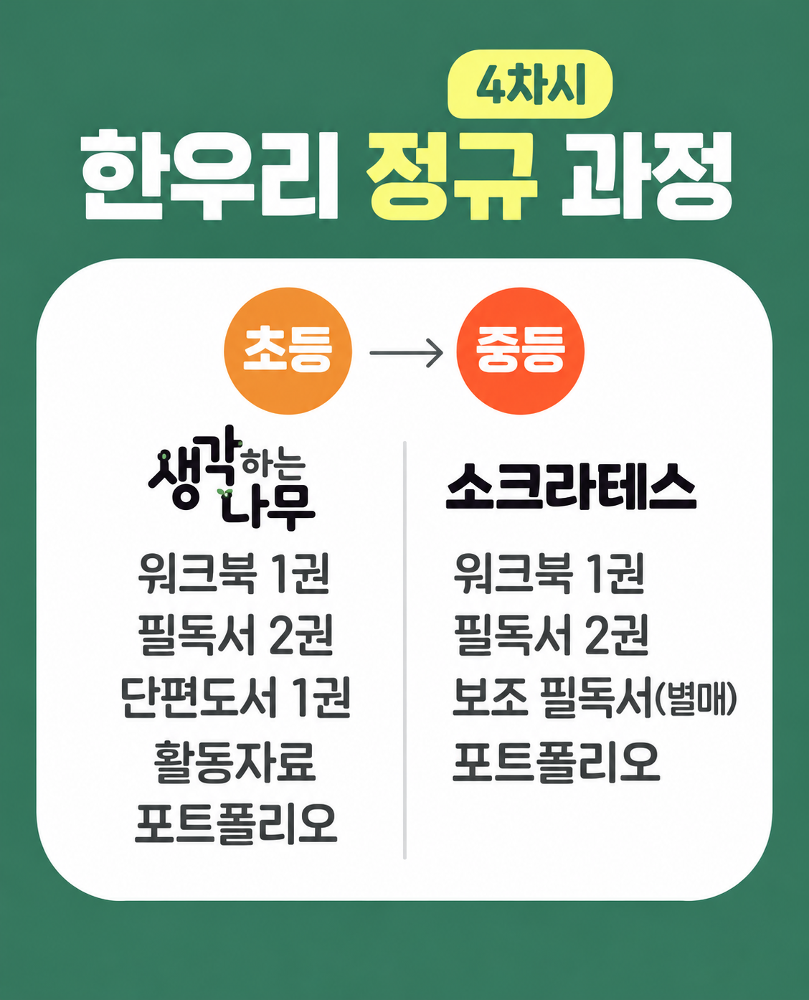

교습소에 대해 궁금하신 점을 모았습니다.
더 궁금한 사항은 카카오톡으로 편하게 문의해 주세요.
A
제 아이가 초등학교에 입학하면서 학교 독서 지원단과 책 읽어주기 어머니 봉사활동을 시작하게 되었습니다. 아이들에게 책을 읽어주며 제 이야기에 귀 기울이고 몰입하는 모습을 볼 때마다 큰 행복과 보람을 느꼈고, 자연스럽게 독서 교육에 관심을 갖게 되었습니다.
처음에는 제 아이를 잘 키우고 싶은 마음에서 출발했지만, 아이들과 책을 함께 읽는 시간이 쌓이면서 우리 지역의 더 많은 아이에게 올바른 독서 방법과 토론의 즐거움을 전하고 싶다는 생각이 커졌습니다. 그 마음을 바탕으로 지금의 한우리독서토론논술 교습소를 설립하게 되었습니다.
처음에는 제 아이를 잘 키우고 싶은 마음에서 출발했지만, 아이들과 책을 함께 읽는 시간이 쌓이면서 우리 지역의 더 많은 아이에게 올바른 독서 방법과 토론의 즐거움을 전하고 싶다는 생각이 커졌습니다. 그 마음을 바탕으로 지금의 한우리독서토론논술 교습소를 설립하게 되었습니다.

A
저희 교습소는 ’한우리독서토론논술’의 체계적인 프로그램을 바탕으로 유아부터 초등, 중등까지 아이의 발달 단계와 눈높이에 맞는 독서토론논술 수업을 진행하고 있습니다.
한우리독서토론논술 연구원들은 매달 교과 과정에 맞춰 필독서를 선정하고, 책에 맞는 교재를 새롭게 구성합니다. 저희는 선정된 필독서를 깊이 있게 읽고, 교재를 바탕으로 자신의 생각을 논리적으로 나누는 토론과 글로 표현하는 논술 수업을 진행하며 아이의 배경지식과 사고력을 자연스럽게 넓혀가고 있습니다.
최근에는 ’몰입독서’ 프로그램도 새롭게 도입했습니다. 한 권의 책을 끝까지 읽어낼 수 있도록 선생님이 전 과정을 밀착해 지도하며, 여러 권을 읽는 것보다 한 권을 제대로 읽는 힘을 기르는 데 초점을 맞췄습니다. 기존 독서토론논술 수업과 자유롭게 조합할 수 있어, 읽기가 아직 익숙하지 않은 아이는 몰입독서로 읽는 힘을 기른 뒤 토론과 논술로 이어가는 맞춤형 수업도 가능합니다.
한우리독서토론논술 연구원들은 매달 교과 과정에 맞춰 필독서를 선정하고, 책에 맞는 교재를 새롭게 구성합니다. 저희는 선정된 필독서를 깊이 있게 읽고, 교재를 바탕으로 자신의 생각을 논리적으로 나누는 토론과 글로 표현하는 논술 수업을 진행하며 아이의 배경지식과 사고력을 자연스럽게 넓혀가고 있습니다.
최근에는 ’몰입독서’ 프로그램도 새롭게 도입했습니다. 한 권의 책을 끝까지 읽어낼 수 있도록 선생님이 전 과정을 밀착해 지도하며, 여러 권을 읽는 것보다 한 권을 제대로 읽는 힘을 기르는 데 초점을 맞췄습니다. 기존 독서토론논술 수업과 자유롭게 조합할 수 있어, 읽기가 아직 익숙하지 않은 아이는 몰입독서로 읽는 힘을 기른 뒤 토론과 논술로 이어가는 맞춤형 수업도 가능합니다.

A
내용을 입력해 주세요.
A
내용을 입력해 주세요.
A
첫째, 아이의 생각을 존중하는 원장 직강
유아교육을 전공하고 10년 이상 공부방을 운영하며 아이들과 가까이 소통해온 원장이 직접 수업합니다. 아이마다 다른 성향과 속도를 존중하며, 주입식 교육보다 자신의 생각을 편안하게 표현하고 책 읽는 즐거움을 스스로 알아갈 수 있도록 돕습니다.
둘째, 30년 노하우를 담은 교재와 몰입독서
독서토론논술연구소의 30년 이상 축적된 연구와 노하우를 바탕으로 매달 새로운 필독서를 선정하고 교재를 개발합니다. 읽기에서 말하기와 쓰기로 자연스럽게 이어지는 수업과 함께 최근에는 초등 읽기 특화 프로그램인 ‘몰입독서’를 도입해 한 권의 책을 끝까지 읽어내는 힘을 기를 수 있도록 지도합니다.
셋째, 집중할 수 있는 소수 정예 수업 환경
깔끔하고 정돈된 공간에서 한 반 6명 이하의 소수 정예로 수업을 진행합니다. 군더더기 없이 편안하게 정돈된 환경과 적은 인원으로 아이 한 명 한 명의 수업 참여와 변화를 가까이 살필 수 있습니다.
넷째, 학년별로 이어지는 체계적인 커리큘럼
아이의 학년에 맞춰 반을 편성하고 또래와 함께 책을 읽고 생각을 나누며 서로에게 좋은 자극을 받을 수 있도록 합니다. 초등부터 중등까지 학년에 맞는 수업을 단계적으로 이어가며 독서와 토론, 논술 실력을 꾸준히 쌓아갈 수 있도록 커리큘럼을 구성했습니다.
다섯째, 수업 결과를 함께 살피는 학부모 소통
수업 내용과 결과물을 개인별로 피드백하고, 아이가 작성한 글은 포트폴리오로 차곡차곡 관리합니다. 이를 통해 현재의 학습 모습을 확인하는 것은 물론, 시간이 지나며 아이의 생각과 글이 어떻게 성장했는지도 함께 살펴볼 수 있습니다.
유아교육을 전공하고 10년 이상 공부방을 운영하며 아이들과 가까이 소통해온 원장이 직접 수업합니다. 아이마다 다른 성향과 속도를 존중하며, 주입식 교육보다 자신의 생각을 편안하게 표현하고 책 읽는 즐거움을 스스로 알아갈 수 있도록 돕습니다.
둘째, 30년 노하우를 담은 교재와 몰입독서
독서토론논술연구소의 30년 이상 축적된 연구와 노하우를 바탕으로 매달 새로운 필독서를 선정하고 교재를 개발합니다. 읽기에서 말하기와 쓰기로 자연스럽게 이어지는 수업과 함께 최근에는 초등 읽기 특화 프로그램인 ‘몰입독서’를 도입해 한 권의 책을 끝까지 읽어내는 힘을 기를 수 있도록 지도합니다.
셋째, 집중할 수 있는 소수 정예 수업 환경
깔끔하고 정돈된 공간에서 한 반 6명 이하의 소수 정예로 수업을 진행합니다. 군더더기 없이 편안하게 정돈된 환경과 적은 인원으로 아이 한 명 한 명의 수업 참여와 변화를 가까이 살필 수 있습니다.
넷째, 학년별로 이어지는 체계적인 커리큘럼
아이의 학년에 맞춰 반을 편성하고 또래와 함께 책을 읽고 생각을 나누며 서로에게 좋은 자극을 받을 수 있도록 합니다. 초등부터 중등까지 학년에 맞는 수업을 단계적으로 이어가며 독서와 토론, 논술 실력을 꾸준히 쌓아갈 수 있도록 커리큘럼을 구성했습니다.
다섯째, 수업 결과를 함께 살피는 학부모 소통
수업 내용과 결과물을 개인별로 피드백하고, 아이가 작성한 글은 포트폴리오로 차곡차곡 관리합니다. 이를 통해 현재의 학습 모습을 확인하는 것은 물론, 시간이 지나며 아이의 생각과 글이 어떻게 성장했는지도 함께 살펴볼 수 있습니다.
더 궁금하신 점이 있으신가요?
카카오톡으로 편하게 문의해 주세요.